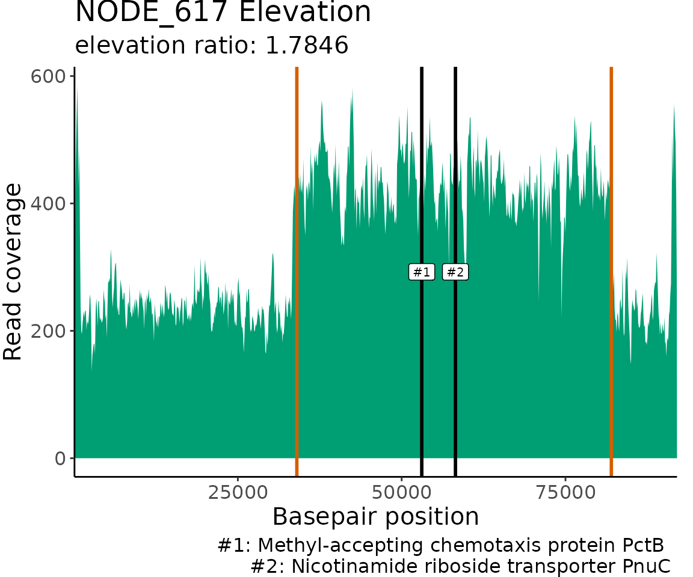

Introduction
ProActive automatically detects regions of
gapped and elevated read coverage using a 2D pattern-matching algorithm.
ProActive detects, characterizes and visualizes read
coverage patterns in both genomes and metagenomes. Optionally, users may
provide gene annotations associated with their genome or metagenome in
the form of a .gff file. In this case, ProActive will
generate an additional output table containing the gene annotations
found within the detected regions of gapped and elevated read coverage.
Additionally, users can search for gene annotations of interest in the
output read coverage plots.
Visualizing read coverage data is important because gaps and elevations in coverage can be indicators of a variety of biological and non-biological scenarios, for example-
- Elevations and gaps in read coverage may be caused by some types of structural variants. Deletions can cause gaps while duplications can cause elevations in read coverage [1].
- Highly active and/or abundant mobile genetic elements, like transposable elements [2] and prophage [3] for example, can create elevations in read coverage at their respective integration sites.
- Genetic regions with high mutation rates and/or high variability within the population can generate gaps in read coverage [4].
- Poor quality sequencing reads and chimeric reference sequences may cause gaps and elevations in read coverage.
Since the cause for gaps and elevations in read coverage can be ambiguous, ProActive is best used as a screening method to identify genetic regions for further investigation with other tools!
References:
- Tattini L., D’Aurizio R., & Magi A. (2015). Detection of Genomic Structural Variants from Next-Generation Sequencing Data. Frontiers in bioengineering and biotechnology, 3, 92. https://doi.org/10.3389/fbioe.2015.00092
- Kleiner M., Bushnell B., Sanderson K.E. et al. (2020) Transductomics: sequencing-based detection and analysis of transduced DNA in pure cultures and microbial communities. Microbiome 8, 158. https://doi.org/10.1186/s40168-020-00935-5
- Kieft K., Anantharaman K. (2022). Deciphering Active Prophages from Metagenomes. mSystems 7:e00084-22. https://doi.org/10.1128/msystems.00084-22
- Fogarty E., Moore R. (2019). Visualizing contig coverages to better understand microbial population structure. https://merenlab.org/2019/11/25/visualizing-coverages/
Installation
CRAN install
install.packages("ProActive")
library(ProActive)GitHub install
if (!require("devtools", quietly = TRUE)) {
install.packages("devtools")
}
devtools::install_github("jlmaier12/ProActive")
library(ProActive)Input data
Pileups
ProActive detects read coverage patterns using a pattern-matching algorithm that operates on pileup files. A pileup file is a file format where each row summarizes the ‘pileup’ of reads at specific genomic locations. Pileup files can be used to generate a rolling mean of read coverages and associated base pair positions which reduces data size while preserving read coverage patterns. ProActive requires that input pileups files be generated using a 100 bp window/bin size.
Pileup files are generated using the .bam files produced after mapping sequencing reads to a metagenome or genome fasta file. Read mapping should be performed using a high minimum identity (0.97 or higher) and random mapping of ambiguous reads.
Some read mappers, like BBMap,
allow for the generation of pileup files in the bbmap.sh
command with use of the bincov output with the
covbinsize=100 parameter/argument. Otherwise,
BBMap’s pileup.sh
can convert .bam files produced by any read mapper to pileup
files compatible with ProActive using the
bincov output with binsize=100.
The input pileup file for metagenomes must have the following format:
Dataframe with four columns:
- V1: Contig accession
- V2: Mapped read coverage values averaged over 100 bp windows
- V3: Starting position (bp) of each 100 bp window. Restarts from 100 at the start of each new contig.
- V4: Starting position (bp) of each 100 bp window. Does NOT restart at the start of each new contig.
| V1 | V2 | V3 | V4 |
|---|---|---|---|
| NODE_1911 length_44214_cov_4.82142_ID_9560073 | 54.66 | 100 | 175075473 |
| NODE_1911 length_44214_cov_4.82142_ID_9560073 | 59.13 | 200 | 175075573 |
| NODE_1911 length_44214_cov_4.82142_ID_9560073 | 53.99 | 300 | 175075673 |
| NODE_1911 length_44214_cov_4.82142_ID_9560073 | 54.69 | 400 | 175075773 |
| NODE_1911 length_44214_cov_4.82142_ID_9560073 | 54.40 | 500 | 175075873 |
| NODE_1911 length_44214_cov_4.82142_ID_9560073 | 52.11 | 600 | 175075973 |
Note that the format for a genome pileup will be slightly different! The third column (V3) does not restart and the fourth column (V4) starts from 0. ProActive accounts for the differences in pileup formats between genomes and metagenomes.
Users may use the ‘sampleMetagenomePileup’ and ‘sampleGenomePileup’ files that come pre-loaded with ProActive as references for proper input file format.
gff TSV
Optionally, ProActive will accept a .gff file as additional input. The .gff file must be associated with the same metagenome or genome used to create your pileup file. The .gff file should be in TSV format and should follow the same layout described here.
The input .gff file must have the following format exactly:| V1 | V2 | V3 | V4 | V5 | V6 | V7 | V8 | V9 |
|---|---|---|---|---|---|---|---|---|
| NODE_1911 | Prodigal:002006 | CDS | 318 | 1166 | . |
|
0 | ID=NJKKNKEE_164175;inference=ab initio prediction:Prodigal:002006;locus_tag=NJKKNKEE_164175;product=hypothetical protein |
| NODE_1911 | Prodigal:002006 | CDS | 1198 | 1938 | . |
|
0 | ID=NJKKNKEE_164176;inference=ab initio prediction:Prodigal:002006;locus_tag=NJKKNKEE_164176;product=hypothetical protein |
| NODE_1911 | Prodigal:002006 | CDS | 1938 | 2582 | . |
|
0 | ID=NJKKNKEE_164177;inference=ab initio prediction:Prodigal:002006;locus_tag=NJKKNKEE_164177;product=hypothetical protein |
| NODE_1911 | Prodigal:002006 | CDS | 2722 | 3561 | . |
|
0 | ID=NJKKNKEE_164178;inference=ab initio prediction:Prodigal:002006;locus_tag=NJKKNKEE_164178;product=hypothetical protein |
| NODE_1911 | Prodigal:002006 | CDS | 3671 | 4063 | . |
|
0 | ID=NJKKNKEE_164179;inference=ab initio prediction:Prodigal:002006;locus_tag=NJKKNKEE_164179;product=hypothetical protein |
| NODE_1911 | Prodigal:002006 | CDS | 4128 | 4670 | . |
|
0 | ID=NJKKNKEE_164180;eC_number=1.11.1.1;Name=rbr1_24;db_xref=COG:COG1592;gene=rbr1_24;inference=ab initio prediction:Prodigal:002006,similar to AA sequence:UniProtKB:Q97FZ9;locus_tag=NJKKNKEE_164180;product=Rubrerythrin-1 |
(Hint- if you are using a gff file output by PROKKA, you may need to remove some unnecessary (for ProActive) lines of text at the top of the file. There are various ways one can remove these additional lines, however, a nice command-line solution is:)
The ‘COMMONID’ should be a value that all of your contig or genome accessions start with. For example, the ‘COMMONID’ for the contig accessions in the sampleMetagenomegffTSV displayed above could be “NODE” since all the accessions start with “NODE”.
ProActiveDetect()
ProActiveDetect() is the main function in the ProActive
R package. This function filters contigs/chunks based on length and read
coverage, performs pattern-matching to detect gaps and elevations in
read coverage, identifies start and stop positions and sizes of
pattern-matches, and, optionally, extracts gene annotations that fall
within detect gaps and elevations in read coverage.
Function components
Chunking
Currently, ProActiveDetect() can only detect one gap or
elevation pattern per contig. Until ProActiveDetect() is
able to detect multiple read coverage patterns per contig, we
implemented a ‘chunking’ functionality which (if
chunkContigs = TRUE) chunks large contigs into smaller
subsets (defined by chunkSize) so that pattern-matching can
be performed on each chunk as if it were an individual contig. The
chunking mechanism is what allows ProActiveDetect() to
perform pattern-matching on entire genome sequences. When
contigs/genomes are chunked, they are assigned a sequential value to
link chunks back together (i.e. “NODE_1_chunk_1, NODE_1_chunk_2,
NODE_1_chunk_3, …). Note that the remaining ‘chunk’ of a contig/genome
may not be long enough to perform pattern-matching on. Chunks too small
for pattern-matching will be put in the output FilteredOut table. If a
chunk splits a gap or elevation pattern in half,
ProActiveDetect() will attempt to detect this and report it
to the user as a ‘possible pattern-match continuity’ between
contig/genome chunks. Pattern-match continuity is detected when two
sequential chunks have a partial elevation/gap pattern going off the
right and left side of the chunks, respectively.
Filtering
Contigs/chunks that are too short or have little to no read coverage
are filtered out prior to pattern-matching.
ProActiveDetect() filters out contigs/chunks that do not
have at least 10x coverage on a total of 5,000 bp across the whole
contig/chunk. The read coverage filtering was done in this way to avoid
filtering out long contigs/chunks with small elevations in read coverage
that might get removed if filtering was done with read coverage averages
or medians. Additionally, contigs/chunks less than 30,000 bp are
filtered out by default, however this can be changed with the
minContigLength parameter which can be set to a minimum of
25,000 bp. If you would like to reduce the size of your input
metagenome pileup file for
ProActiveDetect(), consider pre-filtering your
assembly for contigs greater than 25,000 bp prior to
read mapping!
Changing pileup windowSize
The input pileup files have 100 bp windows in which the mapped read
coverage is averaged over. ProActiveDetect() increases the
window size prior to pattern-matching by averaging the read coverages
over a value specified with windowSize. In many cases, read
coverage patterns don’t require the resolution that 100 bp windows
provide, however, starting with a 100 bp windowSize means the higher
resolution is available if needed. While users can use the 100 bp
windowSize for ProActiveDetect(), the
processing time will be increased significantly and
noisy data may interfere with pattern-matching. We find that the default
1,000 bp windowSize provides a nice balance between
processing time and read coverage pattern resolution. If you’d like more
resolution than the 1,000 bp windowSize provides, consider
dropping the windowSize to 500. If you’d like fine scale
read coverage resolution, consider viewing the contigs/genome with a
software like Integrative Genomics Viewer IGV.
Pattern-matching
ProActiveDetect() detects read coverage patterns using a
2D pattern-matching algorithm. Several predefined patterns, described
below, are built using the specific length and read coverage values of
the contig/chunk being assessed. Patterns are translated across each
contig/chunk in 1,000 bp sliding windows and at each translation, a
pattern-match score is calculated by taking the mean absolute difference
of the read coverage and the pattern values. The smaller the
match-score, the better the pattern-match. After a pattern is fully
translated across a contig/chunk, certain aspects of the pattern are
changed (i.e. height, base, width) and translation is repeated. This
process of translation and pattern re-scaling is repeated until a large
number of pattern variations are tested. After pattern-matching is
complete, the pattern associated with the best match-score is used for
contig/chunk classification. Contigs/chunks are classified as
‘Elevation’, ‘Gap’, or ‘NoPattern’ during pattern-matching.
Elevation pattern:
The ‘elevation’ class is defined by a ‘block’ pattern. During
pattern-matching, the height (max.), base (min.) and width are altered
and all pattern variations are translated across the contig/chunk. The
block width never gets smaller than 10,000 bp by default, however this
can be changed with the minSize parameter.
Gap pattern:
The ‘gap’ class is essentially the reverse of the values used to build the block pattern in the ‘elevation’ class. The same pattern-matching steps (alteration of pattern max., min. and width values and pattern translation) used for the elevation pattern are used for the gap pattern.
Elevation/Gap pattern:
Elevations and gaps that trail off one side of a contig/chunk are hard to classify as the read coverage can be interpreted as a gap or elevation depending on how you’re looking at it. We classify contigs/chunk as ‘Gap’ if the elevated region is greater than 50% of the length of the contig/chunk. Conversely, if the elevated region is less than 50% of the contig/chunk length, the classification is ‘Elevation’.
noPattern:
Since the best pattern-match for each contig/chunk is determined by comparing match-scores amongst all pattern-variations from all pattern classes, we needed a ‘negative control’ pattern to compare against. The ‘NoPattern’ ‘pattern’ serves as a negative control by matching to contigs/chunks with no read coverage patterns. We made two NoPattern patterns which consist of a horizontal line the same length as the contig/chunk being assessed at the contig/chunk’s average and median read coverage value. This pattern is not re-scaled or translated in any way.
Calculating elevation ratios
Every gap and elevation classification receives an ‘elevation ratio’ value which is simply the pattern-match’s maximum value divided by the minimum value. For Elevation classifications, you can think of the elevation ratio as how many times greater the read coverage of the elevated region is compare to the non-elevated region’. Conversely, for Gap classifications, the elevation ratio is how many times less the read coverage of the gap region is compared to the non-gapped region.
Extracting gene annotations in elevated/gapped regions
If a .gff file is provided, then ProActiveDetect() will
extract the gene annotations found within the gapped and elevated
pattern-match regions and provide them to the user in an output table
(GeneAnnotTable). An additional column will be added with the
classification information (Gap or Elevation) associated with the gene
annotations. If the input .gff file contains a gene ‘product’ field in
the attributes column (9th column in the dataframe), then
ProActiveDetect() will extract the product information into
a separate column for easy visualization and filtering of annotations of
interest.
Usage
Default arguments in metagenome mode:
ProActiveOutputMetagenome <- ProActiveDetect(
pileup = sampleMetagenomePileup,
mode = "metagenome",
gffTSV = sampleMetagenomegffTSV
)
#> Preparing input file for pattern-matching...
#> Starting pattern-matching...
#> A quarter of the way done with pattern-matching
#> Half of the way done with pattern-matching
#> Almost done with pattern-matching!
#> Summarizing pattern-matching results
#> Finding gene predictions in elevated or gapped regions of read coverage...
#> Finalizing output
#> Execution time: 1.99secs
#> 0 contigs were filtered out based on low read coverage
#> 0 contigs were filtered out based on length (< minContigLength)
#>
#> Elevation Gap NoPattern
#> 3 3 1Default arguments in genome mode:
ProActiveOutputGenome <- ProActiveDetect(
pileup = sampleGenomePileup,
mode = "genome",
gffTSV = sampleGenomegffTSV
)
#> Preparing input file for pattern-matching...
#> Starting pattern-matching...
#> A quarter of the way done with pattern-matching
#> Half of the way done with pattern-matching
#> Almost done with pattern-matching!
#> Summarizing pattern-matching results
#> Finding gene predictions in elevated or gapped regions of read coverage...
#> Finalizing output
#> Execution time: 30.27secs
#> 0 contigs were filtered out based on low read coverage
#> 0 contigs were filtered out based on length (< minContigLength)
#>
#> Elevation Gap NoPattern
#> 25 3 21Note that ProActiveDetect() can be run
without the gffTSV file!
Arguments/parameters
ProActiveDetect(
pileup,
mode,
gffTSV,
windowSize = 1000,
minSize = 10000,
maxSize = Inf,
minContigLength = 30000,
chunkSize = 50000,
chunkContigs = FALSE,
IncludeNoPatterns = FALSE,
verbose = TRUE,
saveFilesTo
)-
pileup: A .txt file containing mapped sequencing read coverages averaged over 100 bp windows/bins. -
mode: Either “genome” or “metagenome”. -
gffTSV: Optional, a .gff file (TSV) containing gene annotations associated with the .fasta file used to generate the pileup. -
windowSize: The number of basepairs to average read coverage values over. Options are 100, 200, 500, 1000 ONLY. Default is 1000. -
minSize: The minimum size (in bp) of elevation or gap patterns. Default is 10000. -
maxSize: The maximum size (in bp) of elevation or gap patterns. Default is NA (i.e. no maximum). -
minContigLength: The minimum contig/chunk size (in bp) to perform pattern-matching on. Default is 25000. -
chunkSize: Ifmode = "genome"OR ifmode = "metagenome"andchunkContigs = TRUE, chunk the genome or contigs, respectively, into smaller subsets for pattern-matching.chunkSizedetermines the size (in bp) of each ‘chunk’. Default is 100000. -
chunkContigs: TRUE or FALSE, If TRUE andmode = "metagenome", contigs longer than thechunkSizewill be ‘chunked’ into smaller subsets and pattern-matching will be performed on each subset. Default is FALSE. -
IncludeNoPatterns: TRUE or FALSE, If TRUE the noPattern pattern-matches will be included in the PatternMatches output list. If you would like to visualize the read coverage of noPattern classifications inplotProActiveResults(), this should be set to TRUE. -
verbose: TRUE or FALSE. Print progress messages to console. Default is TRUE. -
saveFilesTo: Optional, Provide a path to the directory you wish to save output to. A folder will be made within the provided directory to store results.
Output
The output of ProActiveDetect() is a list containing six
objects:
- SummaryTable: A table containing all pattern-matching classifications
- CleanSummaryTable: A table containing only Gap and Elevation pattern-match classifications (i.e. noPattern classifications removed)
- PatternMatches: A list object containing information needed to
visualize the pattern-matches in
plotProActiveResults() - FilteredOut: A table containing contigs/chunks that were filtered out for being too small or having too low read coverage
- Arguments: A list object containing arguments used for pattern-matching (windowSize, mode, chunkSize, chunkContigs)
- GeneAnnotTable: A table containing gene annotations associated with elevated or gapped regions in pattern-matches
Save the desired list item to a new variable using its associated name.
Metagenome results summary table:
MetagenomeCleanSummaryTable <- ProActiveOutputMetagenome$CleanSummaryTable| refName | classification | elevRatio | startPos | endPos | matchSize |
|---|---|---|---|---|---|
| NODE_1911 | Elevation | 3.349296 | 1000 | 17000 | 16000 |
| NODE_1583 | Elevation | 2.450013 | 42000 | 51000 | 9000 |
| NODE_1884 | Gap | 3.319514 | 36000 | 44000 | 8000 |
| NODE_1255 | Gap | 5.318072 | 1000 | 20000 | 19000 |
| NODE_368 | Gap | 2.690172 | 26000 | 56000 | 30000 |
| NODE_617 | Elevation | 1.784556 | 34000 | 82000 | 48000 |
Subset of genome results summary table:
GenomeCleanSummaryTable <- head(ProActiveOutputGenome$CleanSummaryTable)| refName | classification | elevRatio | startPos | endPos | matchSize | |
|---|---|---|---|---|---|---|
| 3 | NC_003197.2_chunk_3 | Gap | 1.609512 | 283000 | 300000 | 17000 |
| 4 | NC_003197.2_chunk_4 | Elevation | 1.351684 | 339000 | 351000 | 12000 |
| 7 | NC_003197.2_chunk_7 | Elevation | 1.343521 | 692000 | 700000 | 8000 |
| 8 | NC_003197.2_chunk_8 | Elevation | 1.723227 | 784000 | 794000 | 10000 |
| 10 | NC_003197.2_chunk_10 | Elevation | 1.887571 | 964000 | 1000000 | 36000 |
| 12 | NC_003197.2_chunk_12 | Elevation | 1.293144 | 1134000 | 1144000 | 10000 |
Subset of GeneAnnotTable for metagenome results:
MetagenomeResultsGenePredictTable <- head(ProActiveOutputMetagenome$GeneAnnotTable)| seqid | source | type | start | end | score | strand | phase | attributes | geneproduct | Classification |
|---|---|---|---|---|---|---|---|---|---|---|
| NODE_1911 | Prodigal:002006 | CDS | 318 | 1166 | . |
|
0 | ID=NJKKNKEE_164175;inference=ab initio prediction:Prodigal:002006;locus_tag=NJKKNKEE_164175;product=hypothetical protein | hypothetical protein | Elevation |
| NODE_1911 | Prodigal:002006 | CDS | 1198 | 1938 | . |
|
0 | ID=NJKKNKEE_164176;inference=ab initio prediction:Prodigal:002006;locus_tag=NJKKNKEE_164176;product=hypothetical protein | hypothetical protein | Elevation |
| NODE_1911 | Prodigal:002006 | CDS | 1938 | 2582 | . |
|
0 | ID=NJKKNKEE_164177;inference=ab initio prediction:Prodigal:002006;locus_tag=NJKKNKEE_164177;product=hypothetical protein | hypothetical protein | Elevation |
| NODE_1911 | Prodigal:002006 | CDS | 2722 | 3561 | . |
|
0 | ID=NJKKNKEE_164178;inference=ab initio prediction:Prodigal:002006;locus_tag=NJKKNKEE_164178;product=hypothetical protein | hypothetical protein | Elevation |
| NODE_1911 | Prodigal:002006 | CDS | 3671 | 4063 | . |
|
0 | ID=NJKKNKEE_164179;inference=ab initio prediction:Prodigal:002006;locus_tag=NJKKNKEE_164179;product=hypothetical protein | hypothetical protein | Elevation |
| NODE_1911 | Prodigal:002006 | CDS | 4128 | 4670 | . |
|
0 | ID=NJKKNKEE_164180;eC_number=1.11.1.1;Name=rbr1_24;db_xref=COG:COG1592;gene=rbr1_24;inference=ab initio prediction:Prodigal:002006,similar to AA sequence:UniProtKB:Q97FZ9;locus_tag=NJKKNKEE_164180;product=Rubrerythrin-1 | Rubrerythrin-1 | Elevation |
Subset of GeneAnnotTable for genome results:
GenomeResultsGenePredictTable <- head(ProActiveOutputGenome$GeneAnnotTable)| seqid | source | type | start | end | score | strand | phase | attributes | geneproduct | Classification |
|---|---|---|---|---|---|---|---|---|---|---|
| NC_003197.2_chunk_3 | Prodigal:002006 | CDS | 282468 | 284186 | . |
|
0 | ID=LFLNNMPD_00240;eC_number=6.1.1.15;Name=proS;db_xref=COG:COG0442;gene=proS;inference=ab initio prediction:Prodigal:002006,similar to AA sequence:UniProtKB:P16659;locus_tag=LFLNNMPD_00240;product=Proline–tRNA ligase | Proline–tRNA ligase | Gap |
| NC_003197.2_chunk_3 | Prodigal:002006 | CDS | 284297 | 285004 | . |
|
0 | ID=LFLNNMPD_00241;eC_number=2.1.1.-;Name=trmO;db_xref=COG:COG1720;gene=trmO;inference=ab initio prediction:Prodigal:002006,similar to AA sequence:UniProtKB:P28634;locus_tag=LFLNNMPD_00241;product=tRNA (adenine(37)-N6)-methyltransferase | tRNA (adenine(37)-N6)-methyltransferase | Gap |
| NC_003197.2_chunk_3 | Prodigal:002006 | CDS | 285001 | 285405 | . |
|
0 | ID=LFLNNMPD_00242;Name=rcsF;gene=rcsF;inference=ab initio prediction:Prodigal:002006,similar to AA sequence:UniProtKB:P69411;locus_tag=LFLNNMPD_00242;product=Outer membrane lipoprotein RcsF | Outer membrane lipoprotein RcsF | Gap |
| NC_003197.2_chunk_3 | Prodigal:002006 | CDS | 285524 | 286339 | . |
|
0 | ID=LFLNNMPD_00243;Name=metQ_1;db_xref=COG:COG1464;gene=metQ_1;inference=ab initio prediction:Prodigal:002006,similar to AA sequence:UniProtKB:P28635;locus_tag=LFLNNMPD_00243;product=D-methionine-binding lipoprotein MetQ | D-methionine-binding lipoprotein MetQ | Gap |
| NC_003197.2_chunk_3 | Prodigal:002006 | CDS | 286378 | 287031 | . |
|
0 | ID=LFLNNMPD_00244;Name=metI;db_xref=COG:COG2011;gene=metI;inference=ab initio prediction:Prodigal:002006,similar to AA sequence:UniProtKB:P31547;locus_tag=LFLNNMPD_00244;product=D-methionine transport system permease protein MetI | D-methionine transport system permease protein MetI | Gap |
| NC_003197.2_chunk_3 | Prodigal:002006 | CDS | 287024 | 288055 | . |
|
0 | ID=LFLNNMPD_00245;eC_number=3.6.3.-;Name=metN_1;db_xref=COG:COG1135;gene=metN_1;inference=ab initio prediction:Prodigal:002006,similar to AA sequence:UniProtKB:P30750;locus_tag=LFLNNMPD_00245;product=Methionine import ATP-binding protein MetN | Methionine import ATP-binding protein MetN | Gap |
plotProActiveResults()
plotProActiveResults() allows users to visualize both
the read coverage and the pattern-match associated with each Gap or
Elevation classification.
Function components
Re-building pattern-matches
The ProActiveDetect() output contains information needed
to re-build each pattern-match used for classification. To re-build a
complete pattern-match for visualization,
plotProActiveResults() uses the pattern-match’s minimum and
maximum values and the start and stop positions.
Plotting read coverage and associated pattern-matches
By default, the read coverage is plotted for each contig/chunk
classified as having a Gap or Elevation in read coverage. If you wish to
see the read coverage for noPattern classifications, be sure to set
IncludeNoPatterns = TRUE when running
ProActiveDetect(). The pattern-match associated with each
classification is overlaid on the coverage plot.
Usage
Default arguments:
MetagenomeResultsPlots <- plotProActiveResults(
pileup = sampleMetagenomePileup,
ProActiveResults = ProActiveOutputMetagenome
)
GenomeResultsPlots <- plotProActiveResults(
pileup = sampleGenomePileup,
ProActiveResults = ProActiveOutputGenome
)Note- There is no need to set ‘genome’ or
‘metagenome’ mode. plotProActiveResults() will get this
information from the ProActiveDetect() output.
Arguments/parameters
plotProActiveResults(pileup,
ProActiveResults,
elevFilter,
saveFilesTo
)-
pileup: A .txt file containing mapped sequencing read coverages averaged over 100 bp windows/bins. -
ProActiveResults: The output fromProActiveDetect(). -
elevFilter: Optional, only plot results with pattern-matches that achieved an elevation ratio (max/min) greater than the specified value. Default is no filter. -
saveFilesTo: Optional, Provide a path to the directory you wish to save output to. A folder will be made within the provided directory to store results.
Output
The output of plotProActiveResults() is a list of ggplot
objects.
geneAnnotationSearch()
geneAnnotationSearch() helps users explore gene
annotations of interest in and around detected gaps and elevations in
read coverage.
Function components
Search for gene annotations
geneAnnotationSearch() utilizes a .gff file and the
pattern-matching results from ProActiveDetect() to locate
gene annotations that match provided keyWords. The .gff
file should be in the same format described previously in the Input
Files section of this vignette. First, the information associated with
the gene or gene product (depending on what the user selects for the
geneOrProduct parameter) is extracted from the attributes
column of the .gff file. Then, the .gff file is subset to include only
the annotations associated with the contig/chunk being assessed. From
here, the search can vary quite a bit depending on the parameters the
user selects for the inGapOrElev and bpRange
parameters. If inGapOrElev = FALSE (the default), then gene
annotations located anywhere on the contig/chunk that match one or more
of the provided keyWords will be visualized. If
inGapOrElev = TRUE, then only gene annotations within the
gap/elevation region of the pattern-match will be searched for matches
to the provided keyWords. The bpRange
parameter can be used if inGapOrElev = TRUE and allows the
search range to be extended a specified number of base pairs to the left
and right of the gap/elevation pattern-match borders. Gene annotation
are included in the search if the end of the open reading frame (defined
by the ‘end’ values in the .gff file) falls within the search
region.
Plot gene annotation locations
The read coverage and locations of gene annotations that match the
provided keyWords are visualized for each contig/chunk with
matches. The read coverage is plotted using a 100 bp windowSize to allow
for greater resolution of read coverage patterns and gene annotation
locations. The borders of the elevated/gapped regions of read coverage
detected by ProActiveDetect() are marked on the plot with
orange vertical lines. If inElevOrGap = TRUE and
bpRange is set to a non-zero value, then the extended
search range outside the gap/elevation borders are marked on the plot
with orange dashed vertical lines. The matching gene annotation
locations are marked on the plot with black vertical lines at the start
position of the associated open reading frames.
Note- The pattern-matching used to identify the
borders of elevated and gapped regions of read coverage was
likely performed using a windowSize larger than
100 bp in ProActiveDetect(). This means that the locations
of the borders may not perfectly translate to the borders of gaps and
elevations at 100 bp resolution.
Usage
Default arguments:
With defaults, all contigs/chunks classified as having a gap or elevation in read coverage are searched for gene annotations that match any of the provided keywords. The entire contig/chunk is searched, not just the gapped or elevated region.
MetagenomeGeneMatches <- geneAnnotationSearch(
ProActiveResults = ProActiveOutputMetagenome,
pileup = sampleMetagenomePileup,
gffTSV = sampleMetagenomegffTSV,
geneOrProduct = "product",
keyWords = c("transport", "chemotaxis")
)
#> Cleaning gff file...
#> Cleaning pileup file...
#> Searching for matching annotations...
#> 3 contigs/chunks have gene annotations that match one or more of the provided keyWordsNon-default arguments
With the following parameters/arguments, all classified
contigs/chunks are searched for gene annotations that match the provided
keywords (same as default), BUT with the use of
inGapOrElev = TRUE, only the gapped or elevated region is
searched for matching annotations. Additionally, the use of
bpRange = 5000 means that the search region is extended
5,000 bp from the left and right of the gapped or elevated region.
GenomeGeneMatches <- geneAnnotationSearch(
ProActiveResults = ProActiveOutputGenome,
pileup = sampleGenomePileup,
gffTSV = sampleGenomegffTSV,
geneOrProduct = "product",
keyWords = c("ribosomal"),
inGapOrElev = TRUE,
bpRange = 5000
)
#> Cleaning gff file...
#> Cleaning pileup file...
#> Searching for matching annotations...
#> 8 contigs/chunks have gene annotations that match one or more of the provided keyWordsArguments/parameters
geneAnnotationSearch(
ProActiveResults,
pileup,
gffTSV,
geneOrProduct,
keyWords,
inGapOrElev = FALSE,
bpRange = 0,
elevFilter,
saveFilesTo,
verbose = TRUE
) -
ProActiveResults: The output fromProActiveDetect(). -
pileup: A .txt file containing mapped sequencing read coverages averaged over 100 bp windows/bins. -
gffTSV: A .gff file (TSV) containing gene annotations associated with the .fasta file used to generate the pileup. -
geneOrProduct: “gene” or “product”. Search for keyWords associated with genes or gene products. -
keyWords: The keyWord(s) to search for. Case independent. Searches will return the string #’ that contains the matching keyWord. KeyWord(s) must be in quotes, comma-separated, and surrounded by #’ c() i.e( c(“antibiotic”, “resistance”, “drug”) ) -
inGapOrElev: TRUE or FALSE. If TRUE, only search for gene-annotations in #’ the gap/elevation region of the pattern-match. Default is FALSE (i.e search the #’ entire contig/chunk for the gene annotation key-words) -
bpRange: IfinGapOrElev = TRUE, the user may specify the region (in base pairs) that should #’ be searched to the left and right of the gap/elevation region. Default is 0. -
elevFilter: Optional, only plot results with pattern-matches that achieved an elevation ratio (max/min) greater than the specified value. Default is no filter. -
saveFilesTo: Optional, Provide a path to the directory you wish to save output to. A folder will be made within the provided directory to store results. -
verbose: TRUE or FALSE. Print progress messages to console. Default is TRUE.
Output
The output of geneAnnotationSearch() is a list of ggplot
objects.
Default search parameters:
MetagenomeGeneMatches$NODE_617
Non-default search parameters (use of inGapOrElev = TRUE
and bpRange = 5000)
GenomeGeneMatches$NC_003197.2_chunk_3
GenomeGeneMatches$NC_003197.2_chunk_36Session Information
sessionInfo()
#> R version 4.4.2 (2024-10-31)
#> Platform: x86_64-pc-linux-gnu
#> Running under: Ubuntu 24.04.1 LTS
#>
#> Matrix products: default
#> BLAS: /usr/lib/x86_64-linux-gnu/openblas-pthread/libblas.so.3
#> LAPACK: /usr/lib/x86_64-linux-gnu/openblas-pthread/libopenblasp-r0.3.26.so; LAPACK version 3.12.0
#>
#> locale:
#> [1] LC_CTYPE=C.UTF-8 LC_NUMERIC=C LC_TIME=C.UTF-8
#> [4] LC_COLLATE=C.UTF-8 LC_MONETARY=C.UTF-8 LC_MESSAGES=C.UTF-8
#> [7] LC_PAPER=C.UTF-8 LC_NAME=C LC_ADDRESS=C
#> [10] LC_TELEPHONE=C LC_MEASUREMENT=C.UTF-8 LC_IDENTIFICATION=C
#>
#> time zone: UTC
#> tzcode source: system (glibc)
#>
#> attached base packages:
#> [1] stats graphics grDevices utils datasets methods base
#>
#> other attached packages:
#> [1] dplyr_1.1.4 stringr_1.5.1 ggplot2_3.5.1
#> [4] kableExtra_1.4.0 ProActive_0.1.0.9000
#>
#> loaded via a namespace (and not attached):
#> [1] gtable_0.3.6 jsonlite_1.8.9 compiler_4.4.2 tidyselect_1.2.1
#> [5] xml2_1.3.6 jquerylib_0.1.4 systemfonts_1.2.0 scales_1.3.0
#> [9] textshaping_0.4.1 yaml_2.3.10 fastmap_1.2.0 R6_2.5.1
#> [13] labeling_0.4.3 generics_0.1.3 knitr_1.49 tibble_3.2.1
#> [17] desc_1.4.3 munsell_0.5.1 svglite_2.1.3 bslib_0.8.0
#> [21] pillar_1.10.1 rlang_1.1.5 cachem_1.1.0 stringi_1.8.4
#> [25] xfun_0.50 fs_1.6.5 sass_0.4.9 viridisLite_0.4.2
#> [29] cli_3.6.3 withr_3.0.2 pkgdown_2.1.1 magrittr_2.0.3
#> [33] digest_0.6.37 grid_4.4.2 rstudioapi_0.17.1 lifecycle_1.0.4
#> [37] vctrs_0.6.5 evaluate_1.0.3 glue_1.8.0 farver_2.1.2
#> [41] ragg_1.3.3 colorspace_2.1-1 rmarkdown_2.29 tools_4.4.2
#> [45] pkgconfig_2.0.3 htmltools_0.5.8.1